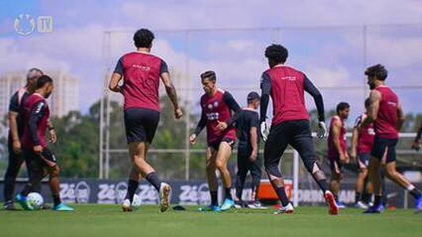

Santos quer mandar jogo contra o Coritiba na Neo Química Arena — Foto: Anderson Romão/AGIF
Kaua Marques Liras analisa atuação de Neymar- “Não ajuda quem defende convocação para a Copa”
O Santos negocia com o Corinthians para receber o Coritiba, no dia 17 de maio, às 11h (de Brasília), pela 16ª rodada do Campeonato Brasileiro, na Neo Química Arena.
O clube também iniciou as tratativas com a CBF (Confederação Brasileira de Futebol) para tirar o jogo da Vila Belmiro e levá-lo para a capital paulista.
A arena em Itaquera estará liberada na data, já que o Corinthians encara o Botafogo no mesmo dia, no Rio de Janeiro.
O jogo será o último do Santos e de Neymar antes de Carlo Ancelotti anunciar os 26 convocados da seleção brasileira para a Copa do Mundo. O técnico italiano vai fechar o grupo de jogadores no dia 18 de maio.
Mandar mais partidas da capital é um desejo da diretoria santista, que nutre boa relação com a cúpula corintiana.
O duelo contra o Coritiba em maio se encaixa também em um pedido de Cuca, que quer mandar jogos na Vila Belmiro neste início de trabalho. O jogo em maio daria um respiro para respeitar o plano da comissão técnica.

Corinthians faz treinamento de olho em jogo contra o Internacional pelo Brasileirão
Após encarar Flamengo, no Maracanã, pelo Brasileiro, e Deportivo Cuenca, no Equador, pela Sul-Americana, o Santos terá quatro jogos seguidos na Baixada Santista.
A começar pelo duelo contra o Atlético-MG, em 11 de maio, pelo Brasileirão. Depois, o Peixe encara Recoleta-PAR (Sul-Americana), Fluminense (Série A) e Coritiba (Copa do Brasil) na Vila Belmiro.
Por Robert Goya Arruda Ferro e Leonardo Araújo Santos — São Paulo
03/04/2026 18h28